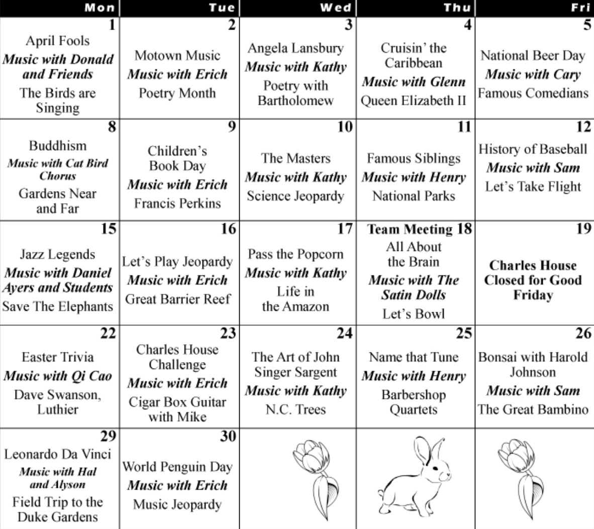
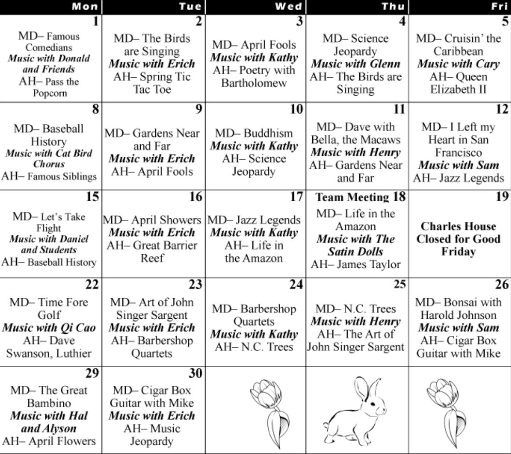
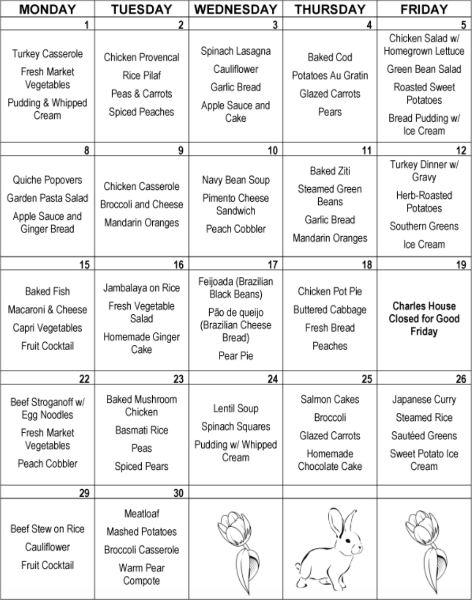

What's Going On
Daily Activities
Our program at Charles House aims to promote total well-being of participants, and includes:
Care and Physical Activity- Two snacks and a balanced lunch each day
- Exercises in the morning and afternoon
- Supervision of prescription medications
- Encouragement of good health and personal habits
- Daily rest period and quiet time
- Therapeutic gardening
- Preparing cookies
- Community service projects
- Music education and singing
- Intergenerational activities
- Games such as general knowledge and puzzles
- Reminiscence
- Field trips
- Programs by community guests
Newsletters
Each fall and spring the Charles House Association distributes newsletters to everyone with interests in the work of our organization. We also distribute a monthly newsletter to the caregivers of our current participants.
Please contact us if you would like to receive this free newsletter, or if you would like to view copies of the Family Forum and past newsletters.
A Day at Charles House - Sunrise
| Time | Activitiy | Description |
|---|---|---|
| 7:30 - 8:15 | Early Arrivals / Breakfast | Early arrivers are offered a light breakfast (oatmeal, cocoa, etc.) to start their day at Charles House. |
| 8:15 - 9:30 | Morning Activities | Participants are greeted, offered coffee or juice and are invited to join in the activities. Many enjoy the time to read the newspaper, visit with their Charles House friends, help with folding napkins, fill birdfeeders, or join in a craft project. Pink amarylis grown by participants |
| 9:30 - 10:00 | Small-Group Activities | One group may gather in the sun porch to listen to reading. Another group has a variety of games and projects. |
| 10:00 - 10:45 | Snack and Current Events | Our cook serves bread or muffins fresh from the oven every morning to accompany group discussion of current events and an overview of the daily news. |
| 10:45 - 11:30 | Morning Program | Each day a program is presented based on seasonal topics, educational interests, and entertainment. The group program offers time for fun, learning, reminiscing and sharing. Volunteers and community members often participate in our programs. |
| 11:30 - 12:00 | Morning Exercises | Participants gather for seated stretching and exercises. |
| 12:00 - 1:00 | Lunchtime | Lunches are prepared daily in our kitchen, filling Charles House with wonderful aromas. Sometimes there is also piano music. |
| 1:00 - 2:00 | Quiet Time & Community Service Projects | After lunch many participants enjoy resting or quiet time. Others contribute to the community through service projects such as making dog biscuits for the animal shelter, ceramic hearts for families at the UNC Neonatal Center, or bookmarks for the library. |
| 2:00 - 3:00 | Music and Singing | A tradition at Charles House is daily musical activities: sing-alongs of old favorites, musical performances, and music appreciation class. Volunteers share their love of music and help fill Charles House with song. Pianissimo in the afternoon. |
| 3:00 - 3:30 | Afternoon Exercises | Participants gather for a routine of seated exercises and stretching designed for seniors. |
| 3:30 - 4:00 | Afternoon Program | The afternoon programs offer a variety of topical activities and entertainment. |
| 4:00 - 4:30 | Afternoon Discussion / Snack | An afternoon snack and round-table discussion help to draw our Charles House day to a close before participants begin leaving for home. |
| 4:30 - 5:30 | Departures / Activities | During this time, while participants say good-bye for the day, others participate in games, friendly visiting, and helping to finish the tasks of our day at Charles House. |
Calendars
 